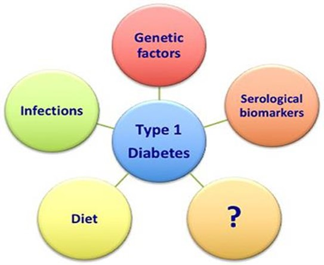

In this project, I used SQL to analyze Cosmetics data to find out the most used chemicals in manufacturing personal care products, chemicals reported and discontinued, companies that used the most reported chemicals in their cosmetics and personal care products and the brands that had chemicals removed and discontinued.

In my month-long virtual internship at PSYLIQ, an Analysis was conducted using Sql(bigquery) to effectively analyze over 100k records of patients information for key insights based on the following factors:
Age, Gender, Body Mass Index (BMI), Blood Glucose Level, Diabetes, Hypertension, Glycated Haemoglobin (HbA1c) Level, Smoking History, Heart Disease and so on.
During my internship with PSYLIQ, a detailed analysis was conducted using Excel and PowerBI to uncover insights using the following HR parameters:
Employee Demographics, Employee Welfare, Key Performance Indicators, Other General Employee Data.
During my month-long internship with PSYLIQ, a detailed analysis was conducted using Excel to uncover insights using the following Employee parameters:
Employee Demographics, Employee Welfare, Key Performance Indicators, Personnel Training & Development, Other General Employee Data.

Data Exploration of Covid-19 Dataset using Sql.
Cleaning Nashville Housing Dataset using Sql.

This is a link to my Tableau Dashboards.
This Data was gotten from http://www.kaggle.com/jessemostipak/hotel-booking-demand. This data set contains booking information for a city hotel and a resort hotel, and includes information such as when the booking was made, length of stay, the number of adults, children, and/or babies, and the number of available parking spaces, among other things.
R Programming was used to compare the size of the market segments between “City Hotel” & “Resort Hotel”, determine the category of customers with the most bookings, the market segment with the largest number of bookings and to determine if people with children booked in advance including weekend nights.